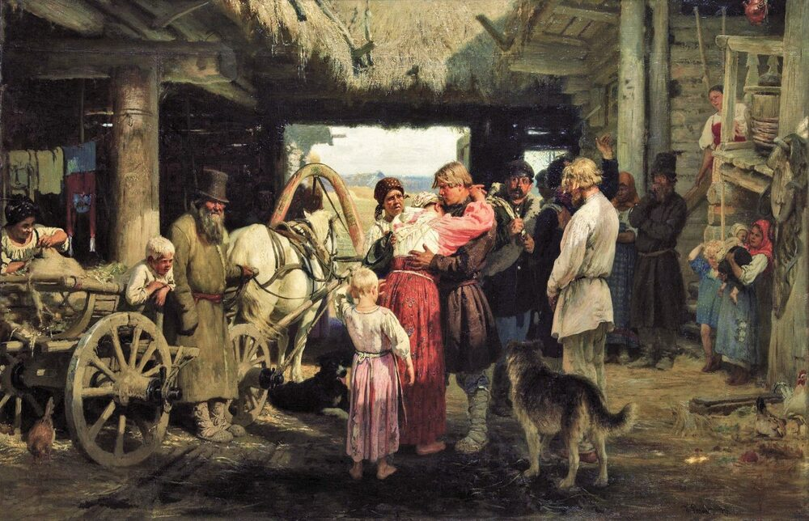

C1 · Society
The Text
Play the audio and follow along, then read it again on your own. Hover over a highlighted word to see what it means.
Listen & Read
How to Read a News Report
Attribution, hedging and the passive — the small words that tell you how much a reporter actually knows.
A competent news report tells you two things at once: what is being claimed, and how confident the reporter is about it. The second is carried almost entirely by small words that readers skim past, and learning to notice them is the single most useful reading skill for anyone following events in a second language — or, for that matter, a first.
Start with attribution. Compare three sentences. “The minister resigned.” “The ministry said the minister had resigned.” “The minister is reported to have resigned.” The first is the reporter's own statement of fact, and a serious outlet will not print it unless the fact is established. The second attributes the claim to an interested party, which is not the same as confirming it. The third attributes it to nobody in particular and is the weakest form of all — “reported” without a source named means somebody else has said it and this outlet has not checked.
That sequence — asserted, attributed, unattributed — is a ladder of confidence, and a well-edited report moves up and down it deliberately within a single paragraph. A reader who does not notice the movement will come away believing the whole paragraph carries equal weight, which is precisely what a careless or dishonest writer relies on.
Then hedging: allegedly, apparently, reportedly, is understood to, is believed to. These are not decoration and they are not cowardice. “Allegedly” in particular has a legal function — it marks a claim that has been made in a formal proceeding and not yet proved — and removing it from a story about a criminal charge is not a stylistic simplification but a statement that the outlet has convicted somebody the court has not. Conversely, a hedge appearing where no hedge is needed, or several stacked together, usually indicates a writer who wants the implication without the responsibility.
The passive voice deserves its own attention. “Several protesters were injured” and “police injured several protesters” describe the same event and are not the same sentence. The passive removes the agent. Sometimes that is honest — the reporter genuinely does not know who caused the injuries, and to guess would be worse. Sometimes it is a choice, and the pattern over many sentences is more revealing than any single one: if agents disappear consistently when one side acts and reappear when the other does, that asymmetry is the story's real position, whatever the text says about itself.
Numbers need reading too. “Up to forty per cent” includes zero. “As many as two thousand” is a ceiling, not an estimate. “More than doubled” is uninformative without the starting figure, because a rise from two cases to five has more than doubled. And a figure with no source attached — no survey, no agency, no date — is not evidence; it is an assertion with digits in it.
Framing is harder to see because it operates on what is not there. Every report selects: which events are covered at all, who is quoted first, whose account frames the others, what is called context and what is called background and what is left out. Two outlets can publish stories in which no individual sentence is false and which nonetheless leave a reader with incompatible impressions. Detecting this requires reading more than one account of the same event, which is inconvenient and has no substitute.

None of this is an argument for cynicism, which is the lazy conclusion and an unhelpful one. “Everybody has an agenda, so nothing can be known” is not scepticism; it is a way of avoiding the work that scepticism requires. The reporters who mark their uncertainty carefully are telling you something true about the state of the evidence, and a report that hedges honestly is more trustworthy than one that sounds certain. The aim is not to distrust everything. It is to read closely enough to know what you have actually been told, which is usually less than it appeared to be and occasionally a great deal more.
Vocabulary
- outlet — a newspaper, broadcaster or site that publishes news
- interested party — someone with a stake in how a matter is understood
- to assert — to state something as fact on your own authority
- unattributed — given without naming a source
- to hedge — to qualify a claim so as not to state it flatly
- allegedly — as claimed in a formal proceeding but not yet proved
- proceeding — a formal legal process
- agent — the person or thing performing the action in a sentence
- asymmetry — an imbalance between two sides that should match
- ceiling — an upper limit rather than an expected value
- framing — the way a story's selection and arrangement shape its meaning
- agenda — an underlying purpose someone is pursuing
- to skim past — to read over something without taking it in
- ladder of confidence — a scale from firmly asserted to merely repeated
- to stack — to pile several of the same thing together
Interactive Exercises
Practice
Complete each exercise, then click Submit to see your score and an explanation for every answer.
Speaking & Writing
Discussion
There are no right answers here — use these to practice speaking, or write a short answer to each.
- Take a news story you read this week and mark every hedge and every attribution in it. What is actually established?
- Is the passive voice in reporting more often honest uncertainty or a deliberate choice? Argue with an example.
- The writer says detecting framing requires reading several accounts and has no substitute. Is that realistic for an ordinary reader?
- “A report that hedges honestly is more trustworthy than one that sounds certain.” Does that match how readers actually respond to confidence?
- Write about 250 words analysing one news report: who is quoted, in what order, what is asserted outright, and what is left to implication.